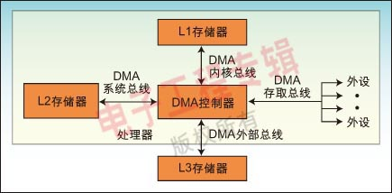
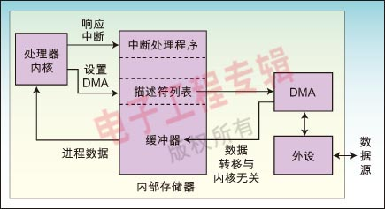

DMA本来不属于CPU体系架构部分的内容，只因为在开发中经常要用到其相关的知识，所以这里就其基本概念、工作原理、常见问题做一个总结。
DMA概述
DMA的英文拼写是“Direct Memory Access”，汉语的意思就是直接内存访问。DMA既可以指内存和外设直接存取数据这种内存访问的计算机技术，又可以指实现该技术的硬件模块（对于通用计算机PC而言，DMA控制逻辑由CPU和DMA控制接口逻辑芯片共同组成，嵌入式系统的DMA控制器内建在处理器芯片内部，一般称为DMA控制器，DMAC）。
DMA内存访问技术
使用DMA的好处就是它不需要CPU的干预而直接服务外设，这样CPU就可以去处理别的事务，从而提高系统的效率，对于慢速设备，如UART，其作用只是降低CPU的使用率，但对于高速设备，如硬盘，它不只是降低CPU的使用率，而且能大大提高硬件设备的吞吐量。因为对于这种设备，CPU直接供应数据的速度太低。 因CPU只能一个总线周期最多存取一次总线，而且对于ARM，它不能把内存中A地址的值直接搬到B地址。它只能先把A地址的值搬到一个寄存器，然后再从这个寄存器搬到B地址。也就是说，对于ARM，要花费两个总线周期才能将A地址的值送到B地址。而DMA就不同了，一般系统中的DMA都有突发（Burst）传输的能力，在这种模式下，DMA能一次传输几个甚至几十个字节的数据，所以使用DMA能使设备的吞吐能力大为增强。
使用DMA时我们必须要注意如下事实：
- DMA使用物理地址，程序是使用虚拟地址的，所以配置DMA时必须将虚拟地址转化成物理地址。
- 因为程序使用虚拟地址，而且一般使用cache地址，所以Cache中的内容与其物理地址（内存）的内容不一定一致，所以在启动DMA传输前一定要将该地址的cache刷新，即写入内存。
- OS并不能保证每次分配到的内存空间在物理上是连续的。尤其是在系统使用过一段时间而又分配了一块比较大的内存时。所以每次都需要判断地址是不是连续的，如果不连续就需要把这段内存分成几段让DMA完成传输
DMAC的基本配置
DMA用于无需CPU的介入而直接由专用控制器（DMA控制器）建立源与目的传输的应用，因此，在大量数据传输中解放了CPU。PIC32微控制器中的DMA可用于映射到内存空间中的不同外设，如从存储区到SPI，UART或I2C等设备。DMA特性详见器件参考手册，这里仅对一些基本原理与功能做一个简析。
| 地址寄存器 | 存放DMA传输时存储单元地址 |
| 字节计数器 | 存放DMA传输的字节数 |
| 控制寄存器 | 存放由CPU设定的DMA传输方式，控制命令等 |
| 状态寄存器 | 存放DMAC当前的状态，包括有无DMA请求，是否结束等 |
独立DMA控制芯片
在课程《微机原理》中，会讲到X86下一片独立的DMA控制芯片8237A。8237A控制芯片各通道在PC机内的任务：
- CH0：用作动态存储器的刷新控制
- CH1：为用户预留
- CH2：软盘驱动器数据传输用的DMA控制
- CH3：硬盘驱动器数据传输用的DMA控制
嵌入式设备中的DMA
直接存储器存取(DMA)控制器是一种在系统内部转移数据的独特外设，可以将其视为一种能够通过一组专用总线将内部和外部存储器与每个具有DMA能力的外设连接起来的控制器。它之所以属于外设，是因为它是在处理器的编程控制下来执行传输的。值得注意的是，通常只有数据流量较大(kBps或者更高)的外设才需要支持DMA能力，这些应用方面典型的例子包括视频、音频和网络接口。
一般而言，DMA控制器将包括一条地址总线、一条数据总线和控制寄存器。高效率的DMA控制器将具有访问其所需要的任意资源的能力，而无须处理器本身的介入，它必须能产生中断。最后，它必须能在控制器内部计算出地址。
一个处理器可以包含多个DMA控制器。每个控制器有多个DMA通道，以及多条直接与存储器站(memory bank)和外设连接的总线，如图1所示。在很多高性能处理器中集成了两种类型的DMA控制器。第一类通常称为“系统DMA控制器”，可以实现对任何资源(外设和存储器)的访问，对于这种类型的控制器来说，信号周期数是以系统时钟(SCLK)来计数的，以ADI的Blackfin处理器为例，频率最高可达133MHz。第二类称为内部存储器DMA控制器(IMDMA)，专门用于内部存储器所处位置之间的相互存取操作。因为存取都发生在内部(L1－L1、L1－L2，或者L2－L2)，周期数的计数则以内核时钟(CCLK)为基准来进行，该时钟的速度可以超过600MHz。
每个DMA控制器有一组FIFO，起到DMA子系统和外设或存储器之间的缓冲器的作用。对于MemDMA(Memory DMA)来说，传输的源端和目标端都有一组FIFO存在。当资源紧张而不能完成数据传输的话，则FIFO可以提供数据的暂存区，从而提高性能。
因为通常会在代码初始化过程中对DMA控制器进行配置，内核就只需要在数据传输完成后对中断做出响应即可。你可以对DMA控制进行编程，让其与内核并行地移动数据，而同时让内核执行其基本的处理任务―那些应该让它专注完成的工作。

在一个优化的应用中，内核永远不用参与任何数据的移动，而仅仅对L1存储器中的数据进行读写。于是，内核不需要等待数据的到来，因为DMA引擎会在内核准备读取数据之前将数据准备好。图2给出了处理器和DMA控制器间的交互关系。由处理器完成的操作步骤包括：建立传输，启用中断，生成中断时执行代码。返回到处理器的中断输入可以用来指示“数据已经准备好，可进行处理”。

数据除了往来外设之外，还需要从一个存储器空间转移到另一个空间中。例如，视频源可以从一个 视频端口直接流入L3存储器，因为工作缓冲区规模太大，无法放入到存储器中。我们并不希望让处理器在每次需要执行计算时都从外部存储读取像素信息，因此为 了提高存取的效率，可以用一个存储器到存储器的DMA(MemDMA)来将像素转移到L1或者L2存储器中。
到目前为之，我们还仅专注于数据的移动，但是DMA的传送能力并不总是用来移动数据。
在最简单的MemDMA情况中，我们需要告诉DMA控制器源端地址、目标端地址和待传送的字的个数。每次传输的字的大小可以是8、16或者12位。 我们只需要改变数据传输每次的数据大小，就可以简单地增加DMA的灵活性。例如，采用非单一大小的传输方式时，我们以传输数据块的大小的倍数来作为地址增量。也就是说，若规定32位的传输和4个采样的跨度，则每次传输结束后，地址的增量为16字节(4个32位字)。
DMA的设置
目前有两类主要的DMA传输结构：寄存器模式和描述符模式。无论属于哪一类DMA，表1所描述的几类信息都会在DMA控制器中出现。当DMA以寄存器模式工作时，DMA控制器只是简单地利用寄存器中所存储的参数值。在描述符模式中，DMA控制器在存储器中查找自己的配置参数。
基于寄存器的DMA
在基于寄存器的DMA内部，处理器直接对DMA控制寄存器进行编程，来启动传输。基于寄存器的DMA提供了最佳的DMA控制器性能，因为寄存器并不需要不断地从存储器中的描述符上载入数据，而内核也不需要保持描述符。
基于寄存器的DMA由两种子模式组成：自动缓冲(Autobuffer)模式和停止模式。在自动缓冲DMA中，当一个传输块传输完毕，控制寄存器就自动重新载入其最初的设定值，同一个DMA进程重新启动，开销为零。
正如我们在图3中所看到的那样，如果将一个自动缓冲DMA设定为从外设传输一定数量的字到 L1数据存储器的缓冲器上，则DMA控制器将会在最后一个字传输完成的时刻就迅速重新载入初始的参数。这构成了一个“循环缓冲器”，因为当一个量值被写入 到缓冲器的最后一个位置上时，下一个值将被写入到缓冲器的第一个位置上。
自动缓冲DMA特别适合于对性能敏感的、存在持续数据流的应用。DMA控制器可以在独立于处理器其他活动的情况下读入数据流，然后在每次传输结束时，向内核发出中断。
停止模式的工作方式与自动缓冲DMA类似，区别在于各寄存器在DMA结束后不会重新载入，因 此整个DMA传输只发生一次。停止模式对于基于某种事件的一次性传输来说十分有用。例如，非定期地将数据块从一个位置转移到另一个位置。当你需要对事件进 行同步时，这种模式也非常有用。例如，如果一个任务必须在下一次传输前完成的话，则停止模式可以确保各事件发生的先后顺序。此外，停止模式对于缓冲器的初 始化来说非常有用。
描述符模型
基于描述符(descriptor)的DMA要求在存储器中存入一组参数，以 启动DMA的系列操作。该描述符所包含的参数与那些通常通过编程写入DMA控制寄存器组的所有参数相同。不过，描述符还可以容许多个DMA操作序列串在一 起。在基于描述符的DMA操作中，我们可以对一个DMA通道进行编程，在当前的操作序列完成后，自动设置并启动另一次DMA传输。基于描述符的方式为管理 系统中的DMA传输提供了最大的灵活性。
ADI 的Blackfin处理器上有两种主要的描述符方式―描述符阵列和描述符列表，这两种操作方式所要实现的目标是在灵活性和性能之间实现一种折中平衡。